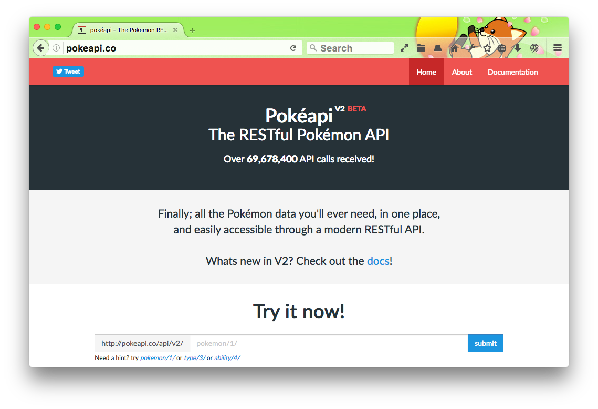
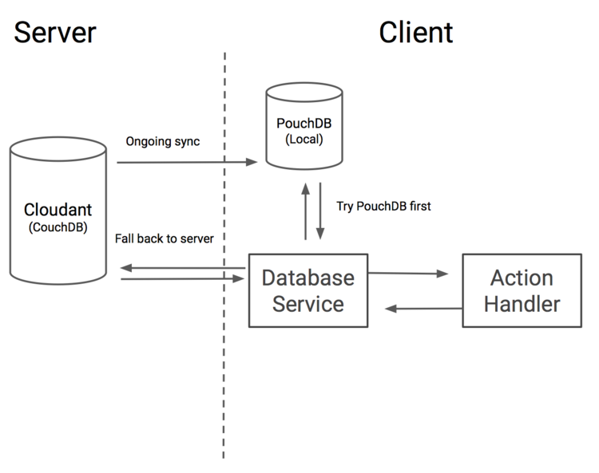

Progressive web apps:
a love story
@nolanlawson
@nolanlawson

A story about mobile
2010


Source: Wikimedia Commons


Bruce Lawson – Progressive web apps




{kind=link}
Pokédroid
- ≥ 440,000 downloads
- ≥ 9,700 reviews
- 4.8 stars
- Top 50 in category "Entertainment"
Why was Pokédroid so popular?
Many alternatives on the web
- Bulbapedia
- Marriland
- Serebii
- GameFAQs
What made Pokédroid unique:
OFFLINE!
It's so nice to be able to be on the road playing Pokémon and having a quick reference without all the large guidebooks.
– Google Play Store review
Super awesome-o. I use this all the time for Pokémon instead of having to go online to Serebii.
– Google Play Store review
3.5MB SQLite database
2011: Pokédroid DMCA'd
Why DMCA?
- Publishing to app store asserts IP ownership
- Nintendo wary of apps
- Web sites okay
In 2011, you could not build Pokédroid using web technology alone.
RIP Pokédroid 😢
The web? 🤔
The web! 😍
Bruce Lawson – Progressive web apps
and the future of the web
HTML [is] in direct competition with other technologies intended for applications deployed over the web, in particular Flash and Silverlight.
– Ian Hickson, 2009 (via Bruce Lawson)
Alex Russell – Progressive web apps
[The web] won on desktop, just in time for mobile to eat the world.
– Alex Russell, 2016
2016: Progressive Web Apps (PWAs)
Coined by Alex Russell
https://infrequently.org/2015/06/progressive-apps-escaping-tabs-without-losing-our-soul/
Profile of a PWA
- Works offline
- Launches from home screen
- "Feels" like a native app
- Push notifications (optional)
- Background sync (optional)
What changed?
| ApplicationCache | → | ServiceWorker |
| LocalStorage/WebSQL | → | IndexedDB |
| Touch icons | → | Web App Manifest |
| Save to homescreen | → | Install banner |
Tips from a native mobile developer
- Prefer offline
- Use background threads